Lageplan · Gruppen · Kameras

K1 Übersicht SO · K2 Augenhöhe vom Steg → Taverne · K3 Seite West, Silhouette. K4 = Nahaufnahme Fuß an G1.
Frei bleiben: Lagune und Westufer (Freifläche), Weg vom Steg zur Taverne.
Frei bleiben: Lagune und Westufer (Freifläche), Weg vom Steg zur Taverne.
Geschichte
Ein Unterwasser-Strand: Die Strandtaverne steht an der Lagune, der Weg kommt vom Steg im Süden. Über dem Lagunenufer hängen Tangbäume mit rosa Blüten, am Weg zur Taverne stehen Palmen. Violette Korallenfelsen stehen an der Kante. Gefühl: Ferien, Wasser, Wiegen.
Farbkonzept 60 / 30 / 10
60 % Sand · Boden, Strand #fbe8b4
30 % Aqua · Lagune, Dünen #5cc3bf, Palmengrün #8fcf45
10 % Rosa · Tangblüten; Korallen-Violett #9a6fd0 an Steinen
Hell-Dunkel: Helles Sand-Oval, dunkleres Aqua in der Mitte. Rosa sitzt nur am Lagunenufer und zieht den Blick von dort zur Taverne.
Gruppen-Rezepte (Rule of Three, Ort-Begründung)
| G1 | Tang-Ufer Wasser Anker: Tangbaum ×1,2 Stützen: Palme klein 0,8 · Agave Akzent: Korallenstein |
| G2 | Palmen vor der Taverne Landmarke Anker: Palme gebogen ×1,3 Stützen: Palme klein · Agave Akzent: Blumen |
| G3 | Strandpalmen am Weg Weg Anker: Palme gebogen ×1,2 Stützen: Agave ×2 Akzent: Korallenstein |
Vorab zu entscheiden: Taverne ist 2,3 H hoch. Wie beim Canyon: Palmen dürfen höchstens 2,2 H, vor ihr 1,4 H sein. Taverne zuerst vergrößern?
Arten · Bild aus lineup.html · Zielhöhe in H
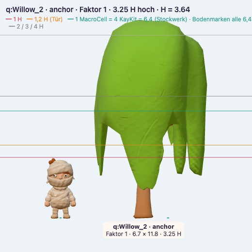
Tangbaum (Weide, rosa Krone)3,25 H · Anker Ufer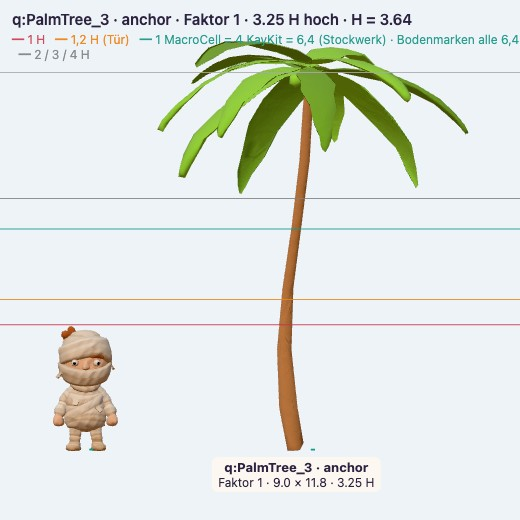
Palme gebogen3,25 H · Anker Weg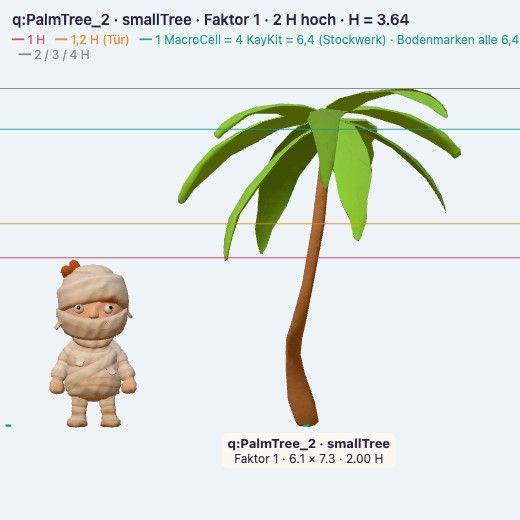
Palme klein2 H · Stütze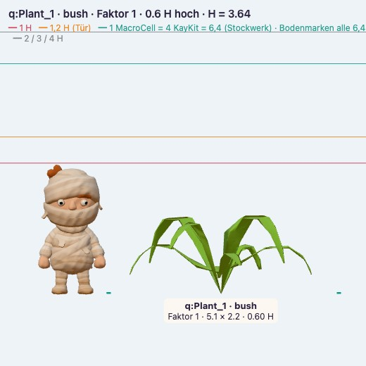
Agave0,6 H · Busch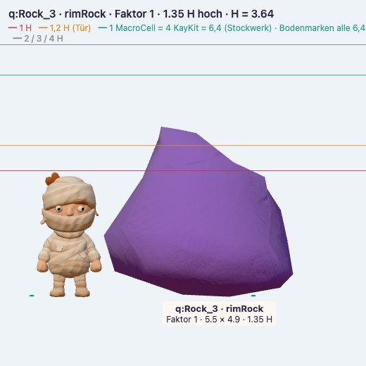
Korallenfels1,35 H · Rand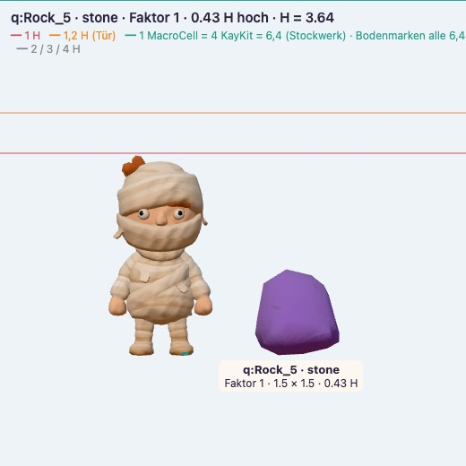
Korallenstein0,43 H · Akzent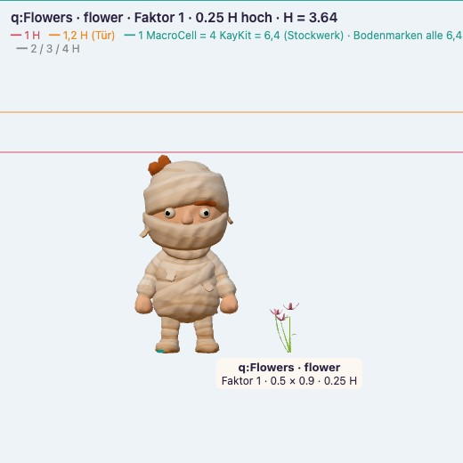
Blumen0,25 H · Akzent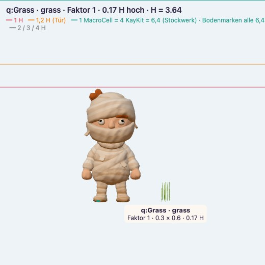
Gras0,18 H · Fuß-ÜberlappungReferenz
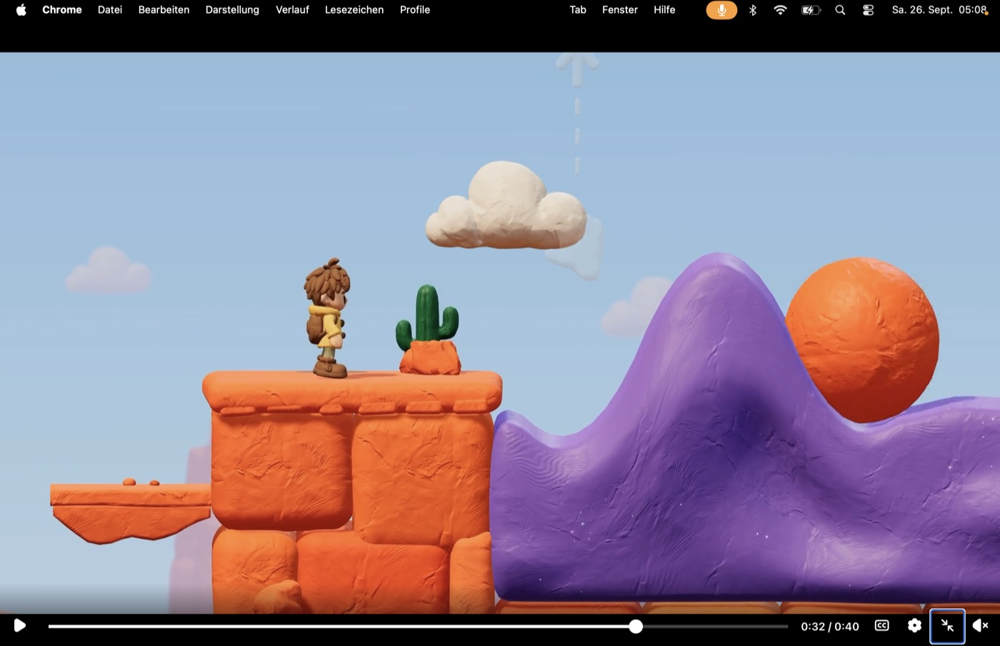
Claybound: Knetform, Farbe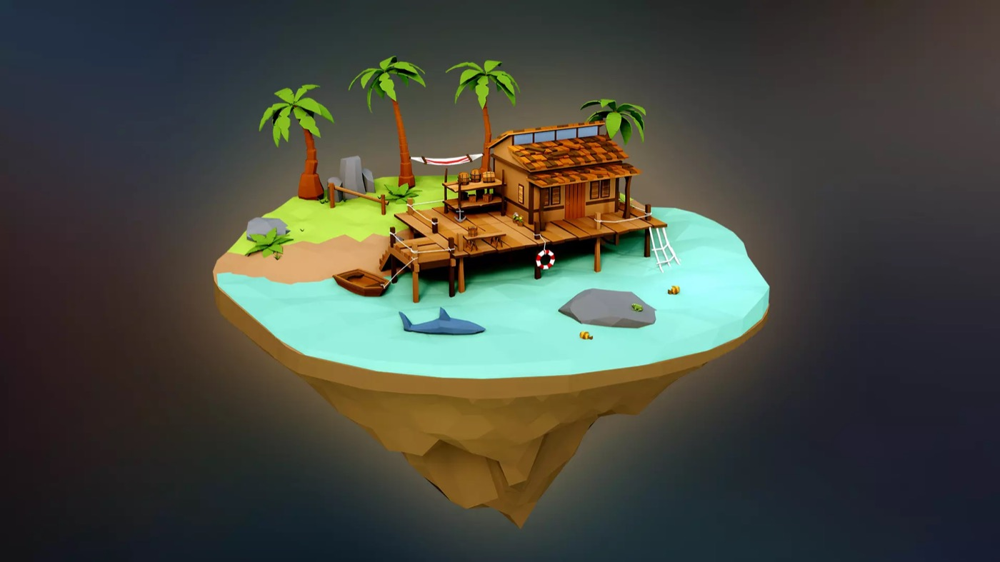
Palmen am Wasser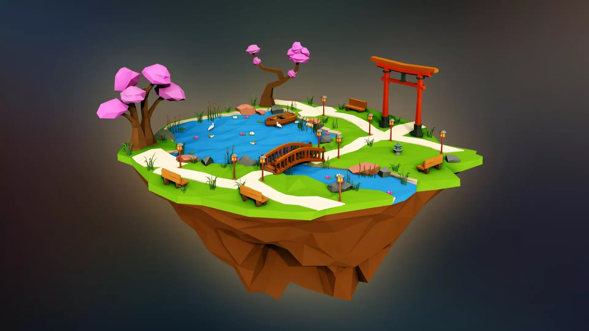
rosa Kronen am TeichKit-Look: facettiert → rund geknetet (gleiche Dreiecke)
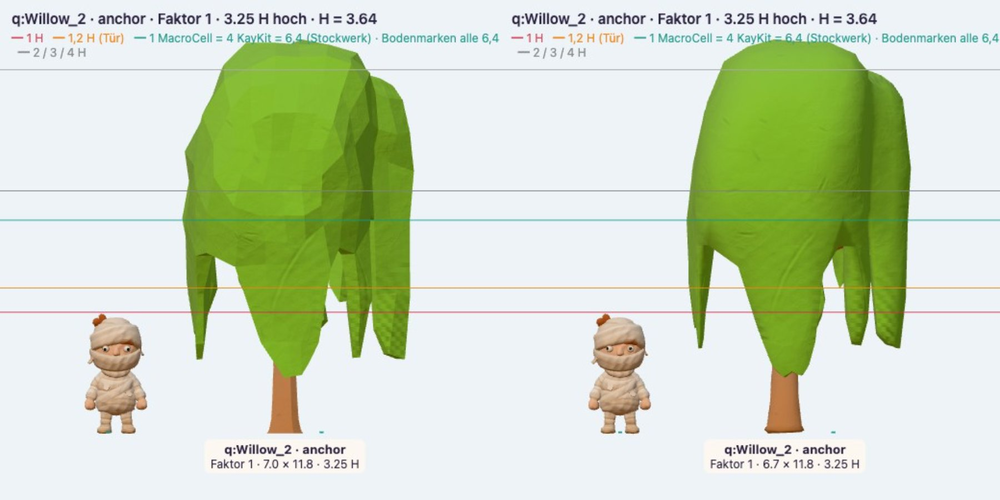